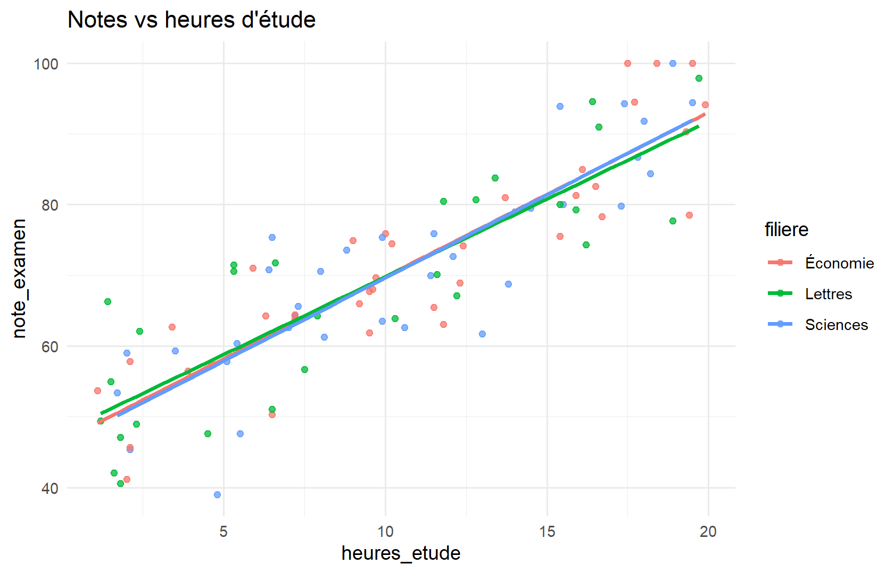

Les projets suivants consolident l’ensemble du parcours. Chaque projet comporte : énoncé, objectifs, données, étapes, résultats attendus et solution détaillée. Faites l’exercice avant de lire la correction.
11.2 Projet 1 — Analyse des ventes
11.2.1 Énoncé
Vous êtes analyste pour une petite entreprise de papeterie. On vous confie data/ventes.csv.
11.2.2 Objectifs
Nettoyer les données (NA, doublons)
Calculer le CA par région et par produit
Produire 2 graphiques commentés
Rédiger 5–10 lignes de conclusions
11.2.3 Étapes recommandées
Import + diagnostic
distinct(), filtre NA
Agrégats dplyr
Barres CA région + boxplot montants produit
Synthèse écrite
11.2.4 Résultats attendus
Table CA par région triée
Au moins un outlier ou NA documenté
Conclusions actionnables (ex. : région / produit à suivre)
ggplot(etudes, aes(heures_etude, note_examen, color = filiere)) +geom_point(alpha =0.75) +geom_smooth(method ="lm", se =FALSE) +labs(title ="Notes vs heures d'étude") +theme_minimal()

Rappel : une association positive n’implique pas que « forcer » des heures supplémentaires produira le même effet hors échantillon (causalité, motivation, etc.).
11.6 Projet 5 — Tableau de bord Shiny
11.6.1 Énoncé
Utilisez ou étendez shiny-app/app.R : au moins un jeu de données, un filtre, un résumé et un graphique.
11.6.2 Résultats attendus
App qui démarre sans erreur
Filtre opérationnel
Histogramme réactif
11.6.3 Solution
Voir shiny-app/app.R. Lancement :
shiny::runApp("shiny-app")
11.7 Projet final — Étude complète
11.7.1 Énoncé
Réalisez une étude de A à Z au choix (ventes, démo ou météo) :
Import et contrôle qualité
Préparation documentée
Statistiques descriptives
Au moins 3 graphiques
Une analyse d’association ou régression si pertinent
# 5. Association quantité / montantcor(ventes_final$quantite, ventes_final$montant)
#> [1] 0.6680832
Rédigez ensuite le rapport .qmd en suivant Chapter 9.
11.8 Quiz de révision rapide
Quelle fonction dplyr filtre les lignes ? → filter
Corrélation prouve-t-elle la causalité ? → Non
Commande pour rendre le livre en HTML ? → quarto render --to html
Structure Shiny minimale ? → ui + server + shinyApp
Pourquoi set.seed ? → Reproductibilité du aléatoire
11.9 Points clés
Un projet réussi est reproductible, interprété et limité explicitement.
Les corrections sont des modèles, pas l’unique réponse acceptable.
11.10 Suite
Chapter 14 : glossaire, aide-mémoires et références.
Source Code
# Projets de synthèse et évaluations {#sec-projets}## IntroductionLes projets suivants consolident l'ensemble du parcours. Chaque projet comporte : énoncé, objectifs, données, étapes, résultats attendus et **solution détaillée**. Faites l'exercice avant de lire la correction.## Projet 1 — Analyse des ventes {#sec-projet-ventes}### ÉnoncéVous êtes analyste pour une petite entreprise de papeterie. On vous confie `data/ventes.csv`.### Objectifs- Nettoyer les données (NA, doublons)- Calculer le CA par région et par produit- Produire 2 graphiques commentés- Rédiger 5–10 lignes de conclusions### Étapes recommandées1. Import + diagnostic2. `distinct()`, filtre NA3. Agrégats dplyr4. Barres CA région + boxplot montants produit5. Synthèse écrite### Résultats attendus- Table CA par région triée- Au moins un outlier ou NA documenté- Conclusions actionnables (ex. : région / produit à suivre)### Solution```{r projet1}library(tidyverse)ventes <- read_csv("data/ventes.csv", show_col_types = FALSE)cat("Doublons :", sum(duplicated(ventes)), "\n")cat("NA region :", sum(is.na(ventes$region)), "\n")ventes_c <- ventes |> distinct() |> filter(!is.na(region), !is.na(quantite))ca_region <- ventes_c |> group_by(region) |> summarise(ca = sum(montant), n = n(), .groups = "drop") |> arrange(desc(ca))ca_regionggplot(ca_region, aes(reorder(region, ca), ca)) + geom_col(fill = "#1a5276") + coord_flip() + labs(title = "CA par région", x = NULL, y = "CA") + theme_minimal()```## Projet 2 — Données démographiques {#sec-projet-demo}### ÉnoncéExplorez `data/demographie.csv` : structure de la population, revenus, aberrant âge/revenu.### Objectifs- Détecter et traiter les valeurs aberrantes- Résumer âge et revenu par ville et sexe- Tableau croisé sexe × niveau d'études### Solution```{r projet2}demo <- read_csv("data/demographie.csv", show_col_types = FALSE)# Aberrants évidentsdemo |> filter(age > 100 | revenu_mensuel > 20000)demo_c <- demo |> filter(age >= 18, age <= 100, revenu_mensuel < 20000)demo_c |> group_by(ville, sexe) |> summarise( n = n(), age_moy = mean(age), revenu_med = median(revenu_mensuel), .groups = "drop" ) |> head(10)demo_c |> count(sexe, niveau_etudes) |> pivot_wider(names_from = sexe, values_from = n, values_fill = 0)```## Projet 3 — Météo {#sec-projet-meteo}### ÉnoncéÀ partir de `data/meteo.csv`, décrivez la saisonnalité température / précipitations.### Solution```{r projet3}meteo <- read_csv("data/meteo.csv", show_col_types = FALSE) |> mutate(date = as.Date(date), mois = floor_date(date, "month"))mensuel <- meteo |> group_by(mois) |> summarise( temp = mean(temperature_c), pluie = sum(precipitations_mm), .groups = "drop" )ggplot(mensuel, aes(mois, temp)) + geom_line(color = "#148f77", linewidth = 1) + labs(title = "Température moyenne mensuelle", x = NULL, y = "°C") + theme_minimal()cor(meteo$temperature_c, meteo$humidite_pct)```## Projet 4 — Régression {#sec-projet-regression}### ÉnoncéAvec `data/etudes_notes.csv`, modélisez la note selon les heures d'étude et la filière.### Solution```{r projet4}library(broom)etudes <- read_csv("data/etudes_notes.csv", show_col_types = FALSE)mod <- lm(note_examen ~ heures_etude + filiere, data = etudes)tidy(mod)glance(mod) |> select(r.squared, adj.r.squared, sigma)ggplot(etudes, aes(heures_etude, note_examen, color = filiere)) + geom_point(alpha = 0.75) + geom_smooth(method = "lm", se = FALSE) + labs(title = "Notes vs heures d'étude") + theme_minimal()```**Rappel** : une association positive n'implique pas que « forcer » des heures supplémentaires produira le même effet hors échantillon (causalité, motivation, etc.).## Projet 5 — Tableau de bord Shiny {#sec-projet-shiny}### ÉnoncéUtilisez ou étendez `shiny-app/app.R` : au moins un jeu de données, un filtre, un résumé et un graphique.### Résultats attendus- App qui démarre sans erreur- Filtre opérationnel- Histogramme réactif### SolutionVoir `shiny-app/app.R`. Lancement :```{r projet5, eval=FALSE}shiny::runApp("shiny-app")```## Projet final — Étude complète {#sec-projet-final}### ÉnoncéRéalisez une étude de A à Z au choix (ventes, démo ou météo) :1. Import et contrôle qualité2. Préparation documentée3. Statistiques descriptives4. Au moins 3 graphiques5. Une analyse d'association ou régression si pertinent6. Rapport Quarto (HTML) de 3–6 pages7. Conclusions et limites### Grille d'évaluation (suggestion)| Critère | Points ||---------|--------|| Reproductibilité (chemins, seed, packages) | 20 || Qualité du nettoyage | 20 || Pertinence des analyses | 20 || Graphiques lisibles | 15 || Interprétation et limites | 15 || Clarté du rapport | 10 |### Solution type (ventes — squelette)```{r projet-final-skel}# 1–2. Préparationventes_final <- read_csv("data/ventes.csv", show_col_types = FALSE) |> distinct() |> filter(!is.na(region), !is.na(quantite), montant > 0) |> mutate(date = as.Date(date), mois = floor_date(date, "month"))# 3. Descriptifventes_final |> summarise(n = n(), ca = sum(montant), moy = mean(montant))# 4. Graphiqueventes_final |> count(mois, wt = montant) |> ggplot(aes(mois, n)) + geom_line() + labs(title = "CA mensuel", y = "CA") + theme_minimal()# 5. Association quantité / montantcor(ventes_final$quantite, ventes_final$montant)```Rédigez ensuite le rapport `.qmd` en suivant @sec-rapports.## Quiz de révision rapide1. Quelle fonction dplyr filtre les lignes ? → `filter`2. Corrélation prouve-t-elle la causalité ? → Non3. Commande pour rendre le livre en HTML ? → `quarto render --to html`4. Structure Shiny minimale ? → `ui` + `server` + `shinyApp`5. Pourquoi `set.seed` ? → Reproductibilité du aléatoire## Points clés- Un projet réussi est **reproductible**, **interprété** et **limité** explicitement.- Les corrections sont des modèles, pas l'unique réponse acceptable.## Suite@sec-annexes : glossaire, aide-mémoires et références.